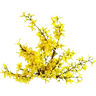
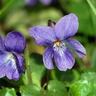
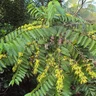

Correspondence Grimoire
Acne
Type
Oils43

Galbanum Essential Oil
Violet Flower AbsoluteViolet Leaf Absolute
Ylang Ylang Essential OilAcne is a skin condition involving clogged pores, breakouts, and inflammation. The essential oils below can be used to address acne. Always consult the safety data on each oil before use, especially regarding phototoxic oils such as bergamot, lemon, and lime.
Home Care
Keeping the skin thoroughly clean and monitoring diet support acne reduction. Witch hazel applied directly to breakouts acts as a gentle astringent to reduce inflammation and cleanse pores.
Suggested Application of Oils
Use these oils for acne via the following methods:
- Massage
- Skin oil/lotion
- Flower Water
- Bath
- Inhalation (Steam)
- Neat Application
Oils to Use to Address Acne
 Bergamot Essential Oil
Bergamot Essential Oil Camphor Essential Oil
Camphor Essential Oil Cananga Essential Oil
Cananga Essential Oil Atlas Cedarwood Essential Oil
Atlas Cedarwood Essential Oil Texas Cedarwood Essential Oil
Texas Cedarwood Essential Oil Virginian Cedarwood Essential Oil
Virginian Cedarwood Essential Oil German Chamomile Essential Oil
German Chamomile Essential Oil Roman Chamomile Essential Oil
Roman Chamomile Essential Oil Clove Essential Oil
Clove Essential Oil- Galbanum Essential Oil
 Geranium Essential Oil
Geranium Essential Oil Grapefruit Essential Oil
Grapefruit Essential Oil Helichrysum Essential Oil
Helichrysum Essential Oil Juniper Berry Essential Oil
Juniper Berry Essential Oil- Lavandin Essential Oil
 Spike Lavender Essential Oil
Spike Lavender Essential Oil- Lavender Essential Oil
- Lemon Essential Oil
 Lemongrass Essential Oil
Lemongrass Essential Oil- Lime Essential Oil
 Linaloe Wood Essential Oil
Linaloe Wood Essential Oil- Linaloe Seed Essential Oil
 May Chang Essential Oil
May Chang Essential Oil- Mandarin Essential Oil
 Peppermint Essential Oil
Peppermint Essential Oil Spearmint Essential Oil
Spearmint Essential Oil- Myrtle Essential Oil
 Niaouli Essential Oil
Niaouli Essential Oil Palmarosa Essential Oil
Palmarosa Essential Oil Patchouli Essential Oil
Patchouli Essential Oil Petitgrain Essential Oil
Petitgrain Essential Oil Rosemary Essential Oil
Rosemary Essential Oil- Rosewood Essential Oil
 Clary Sage Essential Oil
Clary Sage Essential Oil- Spanish Sage Essential Oil
 Sandalwood Essential Oil
Sandalwood Essential Oil Tea Tree Essential Oil
Tea Tree Essential Oil Common Thyme Essential Oil
Common Thyme Essential Oil Vetivert Essential Oil
Vetivert Essential Oil- Violet Flower Absolute
- Violet Leaf Absolute
 Yarrow Essential Oil
Yarrow Essential Oil- Ylang Ylang Essential Oil